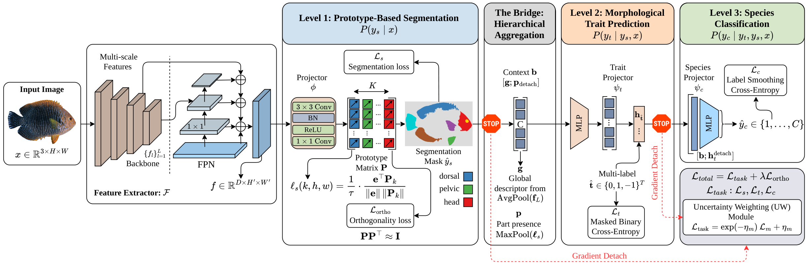
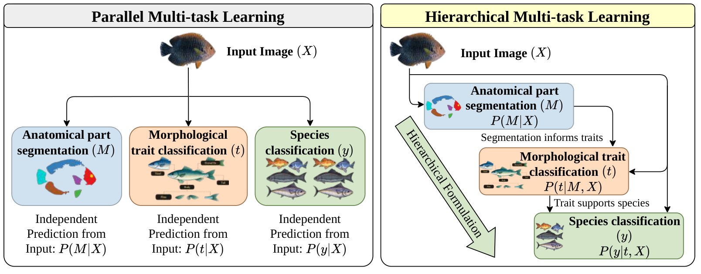
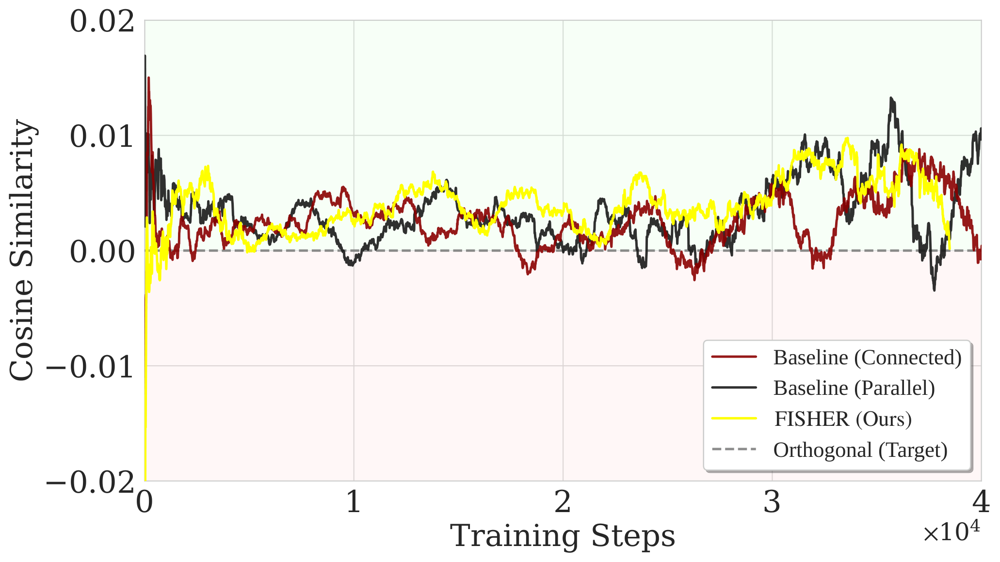
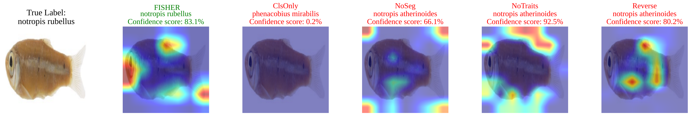
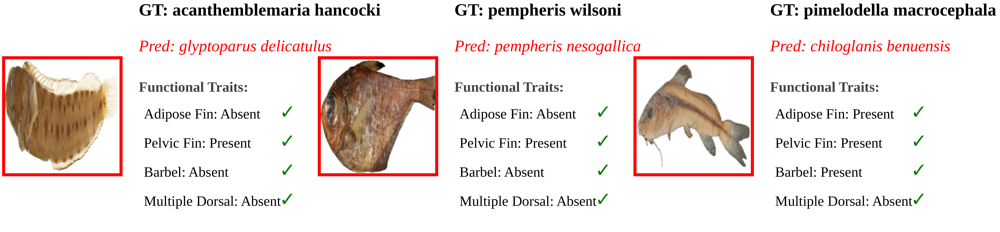
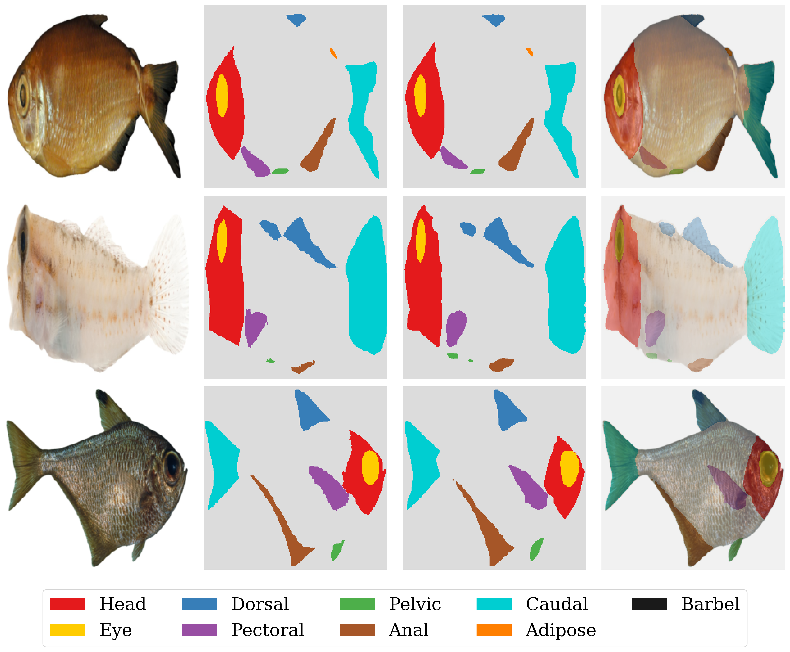
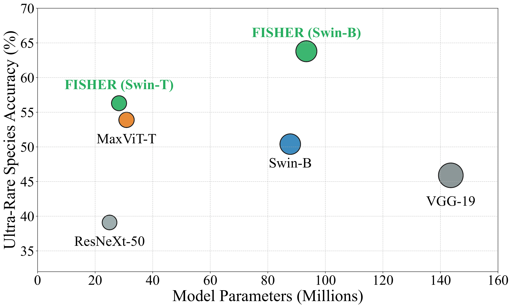
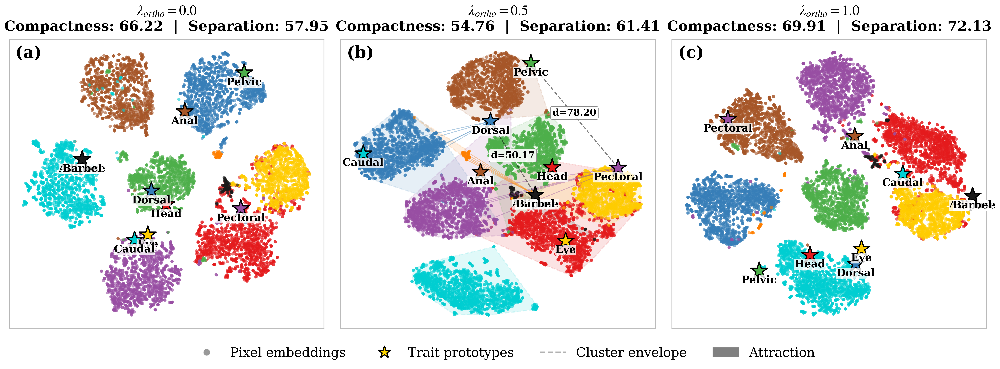
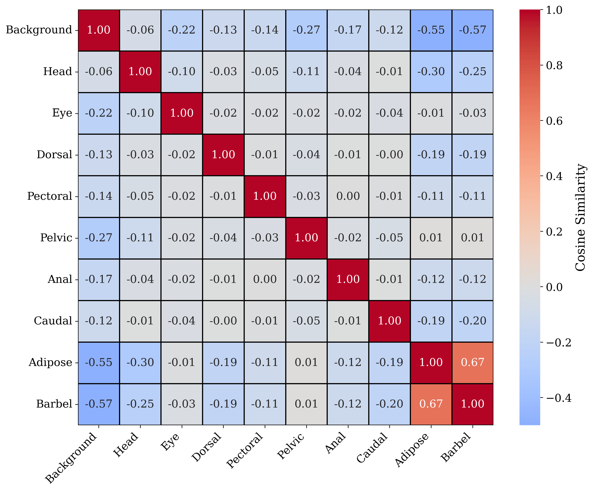

FISHER: Gradient-Decoupled Hierarchical Multi-Task Learning for Fine-Grained Aquatic Species Recognition

Fig. 1. Overview of the FISHER architecture. Features are extracted by a shared backbone and refined hierarchically from segmentation to trait prediction and species classification. Red dashed lines denote gradient decoupling (stop-gradient) used to mitigate negative transfer.
Abstract
Fine-grained recognition of aquatic species is challenging due to subtle morphological differences and long-tailed distributions, where ultra-rare species are underrepresented. A natural solution is to jointly model segmentation, morphological traits, and species classification within a multi-task learning (MTL) framework. However, existing MTL methods suffer from negative transfer caused by gradient conflicts between low-level dense tasks and high-level classification objectives, degrading fine-grained representations.
To address this, we identify gradient interference across hierarchical tasks as a fundamental bottleneck and propose FISHER (Fine-grained Integrated Segmentation and Hierarchical Learning for Recognition), a gradient-decoupled hierarchical MTL framework. FISHER aligns optimization with the biological hierarchy of aquatic species by enforcing a unidirectional information flow — segmentation → trait prediction → species classification — while explicitly decoupling gradients across task boundaries. This prevents high-level objectives from corrupting low-level morphological representations, effectively mitigating negative transfer while preserving the benefits of shared supervision.
Furthermore, we introduce a prototype-based segmentation head with orthogonality regularization to encourage disentangled anatomical representations, and employ homoscedastic uncertainty weighting to dynamically balance task contributions during training. Extensive experiments on the Fish-Vista benchmark demonstrate that FISHER achieves 97.7% mAP for trait identification on unseen species and improves ultra-rare species classification accuracy by 13.4% over strong baselines.
Key Results on Fish-Vista
Why Hierarchical Gradient Decoupling?

Fig. 2. Parallel MTL (left) learns segmentation, traits, and species independently from shared features. FISHER (right) models a hierarchical dependency where segmentation informs traits and traits guide classification.

Fig. 3. Gradient cosine similarity between the segmentation task and the species classification task throughout training. Negative values confirm destructive gradient interference — the core bottleneck FISHER addresses.
Three design principles of FISHER
- Gradient Decoupling at Task Boundaries. Stop-gradient operations at the segmentation→trait and trait→species interfaces prevent high-level classification gradients from corrupting fine-grained anatomical features.
- Prototype-Based Segmentation with Orthogonality. Learnable class prototypes with orthogonality regularization yield compact, disentangled, and interpretable representations of anatomical parts (fins, head, barbels, …).
- Homoscedastic Uncertainty Weighting. Adaptive per-task weights automatically down-weight the noisy species classification signal (dominant under long-tailed distributions) and up-weight stable segmentation and trait signals.
Qualitative Results

Segmentation masks and trait predictions on Notropis rubellus — FISHER correctly delineates fine anatomical structures even for ultra-rare species.

Trait attribution maps: FISHER highlights the discriminative morphological features (adipose fin, pelvic fin, barbels) used for trait identification and species classification.

Anatomical part segmentation results across diverse fish species, including common and ultra-rare classes.

FISHER achieves the best ultra-rare species accuracy while maintaining competitive efficiency compared to larger models.
Representation Analysis

t-SNE embeddings. FISHER produces tighter, better-separated species clusters compared to standard parallel MTL, especially for rare and ultra-rare species.

Prototype correlation. The orthogonality constraint enforces near-zero off-diagonal correlations between anatomical part prototypes, yielding disentangled representations.
Quantitative Comparison
Species Classification (Fish-Vista)
| Model | F1 | Major Acc. | Neutral Acc. | Minor Acc. | Ultra-Rare Acc. |
|---|---|---|---|---|---|
| VGG-19 | 49.7 | 93.5 | 83.0 | 74.2 | 45.9 |
| ResNeXt-50 | 44.4 | 91.4 | 78.3 | 69.8 | 39.1 |
| Swin-B-22k | 55.1 | 92.6 | 86.2 | 79.6 | 50.4 |
| MaxViT-T | 57.8 | 94.4 | 86.7 | 81.4 | 53.9 |
| TransFG | 50.3 | 94.5 | 86.6 | 75.5 | 45.3 |
| MTLSwinB | 57.9 | 95.2 | 89.0 | 85.9 | 60.5 |
| FISHER† (Ours) | 60.8 | 95.5 | 89.0 | 86.2 | 63.8 |
Trait Identification on Unseen Species (OOD — mAP %)
| Model | mAP | Adipose | Pelvic | Barbel | Dorsal |
|---|---|---|---|---|---|
| EfficientNet-v2 | 83.86 | 95.45 | 88.10 | 83.97 | 67.91 |
| MaxViT-T | 75.42 | 87.18 | 81.30 | 76.03 | 57.15 |
| Q2L (Swin-22k SH) | 88.41 | 98.61 | 93.06 | 97.30 | 64.65 |
| MTLSwinB | 92.71 | 98.41 | 99.95 | 95.74 | 76.75 |
| FISHER† (Ours) | 97.72 | 98.62 | 99.95 | 99.43 | 92.90 |
Semantic Segmentation (mIoU %)
| Model | Size | mIoU | Head | Eye | Dorsal | Caudal | Barbel |
|---|---|---|---|---|---|---|---|
| YOLOv8 | 320 | 83.1 | 84.5 | 83.1 | 88.0 | 89.6 | 26.7 |
| Mask2Former | 320 | 81.6 | 86.4 | 79.1 | 87.6 | 88.8 | 0.0 |
| MTLSwinB | 224 | 80.4 | 87.8 | 82.7 | 91.5 | 92.9 | 34.5 |
| FISHER† (Ours) | 224 | 79.8 | 88.3 | 83.2 | 91.6 | 92.9 | 32.9 |
| FISHER† (Ours) | 320 | 81.4 | 88.9 | 85.8 | 92.4 | 93.3 | 36.3 |
FISHER† = FISHER with long-tail baseline augmentation.
BibTeX
@article{Nguyen2026FISHER,
title = {FISHER: Gradient-Decoupled Hierarchical Multi-Task Learning
for Fine-Grained Aquatic Species Recognition},
author = {Nguyen, Phuc H. and Ngo, Ba Hung and Tran, Mai Phuong
and Do, Cuong D. and Nguyen, Van-Dinh},
journal = {arXiv preprint arXiv:2607.20523},
year = {2026},
eprint = {2607.20523},
archivePrefix = {arXiv},
primaryClass = {q-bio.QM},
doi = {10.48550/arXiv.2607.20523}
}